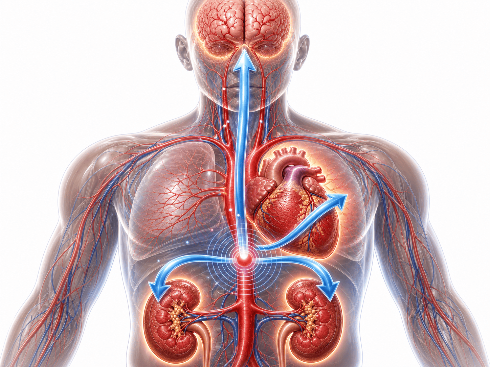
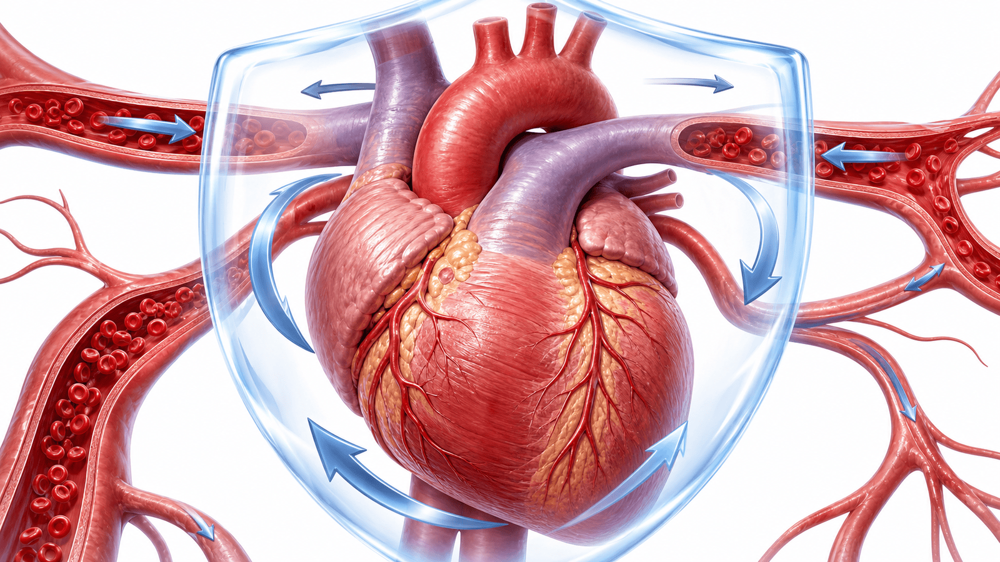
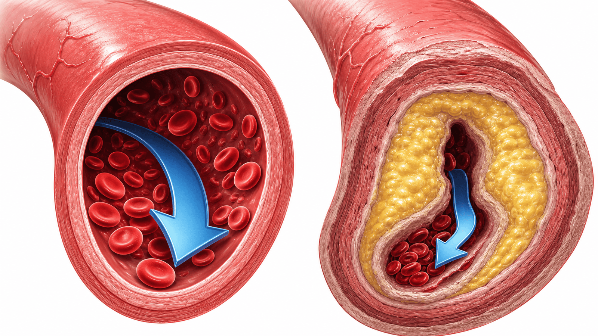
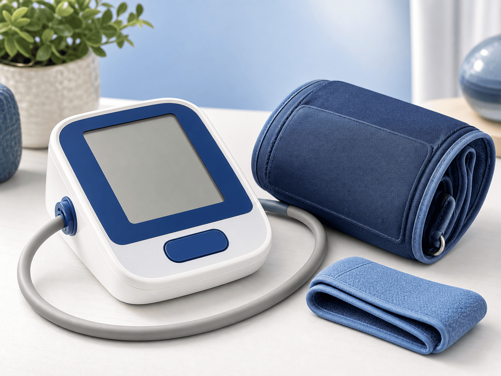

강력한 강압(SBP<130) vs 표준조절 — 심혈관 이득 뚜렷·뇌졸중 감소 크고·저혈압은 주의
주요심혈관사건 (MACE) ↓20%(95% CI 0.73–0.89, p<0.001)
뇌졸중 (stroke) ↓27%(95% CI 0.60–0.87, p=0.008)
저혈압 (hypotension) 신호 ↑(95% CI 1.01–20.99, p=0.05 · 경계)
2형당뇨병 환자에서 강력한 강압치료(수축기혈압 <130 mmHg)는 표준조절 대비 주요심혈관사건(MACE)을 20%, 특히 뇌졸중을 27% 감소시켰다(각 통계적 유의). 심부전·심근경색·심혈관사망은 유의한 차이 없음. 이득은 SBP<130 목표 + 명시적 이완기 목표를 둔 시험에서 더 컸다. 단, 저혈압 신호가 경계적으로 증가(RR 4.61)하므로 고령·다약제·기립저혈압 위험군은 가정혈압을 보며 단계적으로 도달한다.
고혈압은 뇌·심장·신장 표적장기(target organ)를 손상 — 당뇨병과 겹치면 위험이 배가된다
표적장기 손상 — 높은 혈압은 뇌졸중·심부전·신장병을 앞당긴다. 당뇨병은 이 손상을 가속한다. · 당뇨 + 고혈압 = 위험의 상승작용 · 동반 유병 — 2형당뇨병 환자의 60% 이상이 고혈압을 동반 · 뇌 — 높은 혈압은 뇌소혈관 손상 → 뇌졸중 (stroke) 위험 ↑ · 심장 — 좌심실 비대·심부전·심근경색 (MI) 위험 ↑ · 신장 — 사구체 고압 → 단백뇨·만성신장병 (CKD) 진행 ↑ · 목표 논쟁 — 얼마나 낮춰야 하나? <140 vs <130 mmHg · 본 메타분석 — 9개 RCT·34,260명으로 SBP<130 이득을 정량화 · ⭐ 핵심 — 2025 AHA/ACC 130/80 기조 · 2026 심장-신장-대사(CKM) 통합 관리 프레임워크로 강압의 근거가 강화되었다.

2형당뇨병 강압치료 RCT 9개 통합 — 강력조절 vs 표준조절, random-effects 모형
Systematic review + meta-analysis of RCTs · Front Endocrinol 2026;17:1850865 · PMID 42375334
무작위대조시험 (RCT) 9개, 총 34,260명의 2형당뇨병 (T2D) 환자
강력한 혈압조절 (intensive BP control) — 낮은 목표혈압, 다수 시험이 SBP<130 mmHg 지향
표준(관례적) 혈압조절 (conventional/standard BP control)
주요심혈관사건 (MACE) — 심혈관 복합사건 발생
뇌졸중 (stroke)·심부전 (HF)·심근경색 (MI)·심혈관사망 (CV death) 개별 성분
Random-effects model · 상대위험도 (RR)·95% 신뢰구간 (CI) · PROSPERO CRD420251266814 사전등록
시험 간 목표혈압 정의 이질성 · 저혈압 등 안전성 이벤트 보고 편차 · 개별 성분 검정력 제한
강력조절 vs 표준조절. 좌측(녹색) = 강압 유리(RR<1), 우측(빨강) = 강압 불리. ● 점추정, 막대 = 효과크기
| Outcome | RR (강력 vs 표준) | ← 강압 유리 · RR 1.0 · 강압 불리 → | 95% CI · p value |
|---|---|---|---|
| ❤️ 주요심혈관사건 (MACE) | 0.80 | 0.73 ~ 0.89 p<0.001 (유의) | |
| 🧠 뇌졸중 (stroke) | 0.73 | 0.60 ~ 0.87 p=0.008 (유의) | |
| 🫀 심부전·심근경색·심혈관사망 | NS | 95% CI 1.0 포함 · 유의한 차이 없음 | |
| 요약 — MACE 20%↓·뇌졸중 27%↓ 통계적 유의. 심부전·MI·심혈관사망은 개별로는 유의차 없음 — 이득의 상당 부분이 뇌졸중에서 유래. | |||

높은 혈압이 뇌혈관을 손상시키는 경로 — 강압이 이 손상 진행을 늦출 수 있다
MECHANISM · 01 · 🧠 뇌소혈관 손상 · 지속적 고혈압은 뇌 소혈관 (small vessel)의 내막을 두껍게 하고 내강을 좁혀 열공경색·미세출혈을 유발한다. · MECHANISM · 02 · 💧 강압의 직접 효과 · 혈압을 낮추면 혈관벽 전단응력 (shear stress) 이 줄어 죽상경화·파열 위험을 낮출 수 있다 — 가능한 기전. 이 분석은 뇌졸중 전체(RR 0.73)만 보고했고 허혈성·출혈성을 나눈 결과는 없다. · MECHANISM · 03 · 🩸 뇌졸중 우선 반응 · 뇌졸중 감소는 메타분석에서 관찰된 결과다. 혈압 조절이 뇌혈관에 영향을 줄 수 있다는 설명은 가능한 기전이며, 이 분석이 직접 검증한 것은 아니다. · MECHANISM · 04 · ⚖️ 심부전·MI는 복합 · 심부전·심근경색은 혈압 외 관상동맥·혈당·지질 등 다인자 영향 — 강압 단독 효과가 개별 성분에서는 희석된다.

목표혈압 강도·이완기 목표 유무가 이득을 좌우 — 동반 혈당·지질 조절은 효과에 영향 없음
수축기혈압 <130 mmHg를 지향한 시험에서 이득이 더 컸다 — 더 낮은 목표가 더 큰 심혈관 보호로 이어짐.
표준적 <140 목표 대비 <130 목표군에서 MACE·뇌졸중 감소폭이 더 뚜렷하게 관찰되었다.
이완기혈압 (DBP) 목표를 함께 명시한 시험에서 이득이 더 컸다 — 수축기·이완기 통합 조절의 중요성.
강력한 혈당조절 동반 여부는 강압의 심혈관 효과를 바꾸지 않았다 (effect modification 없음).
강력한 지질조절 동반 여부 역시 강압 효과를 변화시키지 않았다 — 강압 이득은 독립적.
이득의 핵심 조건은 충분히 낮은 목표(SBP<130) + 이완기 목표 — 병용 위험인자 관리와 무관하게 강압 자체가 유효.
저혈압 (hypotension)이 경계적으로 증가 · 그 외 이상반응은 두 군 간 차이 없음
| 안전성 항목 | 강력 vs 표준 | RR (95% CI) | 해석·임상 관리 |
|---|---|---|---|
| 🩹 저혈압 (hypotension) | 증가 (경계) | RR 4.61 (1.01–20.99) | 유일하게 증가한 신호 (p=0.05, 넓은 CI). 고령·기립저혈압 위험군에서 특히 주의 — 단계적 강압·가정혈압 확인 |
| 🫀 서맥·실신 | 차이 없음 | 유의차 없음 | 중대한 서맥·실신 이벤트는 두 군 간 유의한 차이 관찰되지 않음 |
| 🩺 신기능 악화 | 차이 없음 | 유의차 없음 | 급성 신손상·전해질 이상 등 신장 관련 이상반응 증가 신호 없음 |
| ✅ 전체 중대 이상반응 | 차이 없음 | 유의차 없음 | 저혈압 외 다른 이상반응 증가는 관찰되지 않아 전반적 내약성은 양호 |
| 주의 저혈압 신호는 넓은 신뢰구간(1.01–20.99)으로 불확실성이 크나, 고령·다약제·기립저혈압 위험군에서는 가정혈압·기립혈압을 확인하며 목표에 단계적으로 도달한다. | |||
진료실 혈압만으로 강압하면 저혈압 위험 — 가정혈압을 보며 단계적으로 낮춘다
가정혈압 — 아침·저녁 안정 상태에서 측정. 진료실 수치보다 실제 위험을 더 잘 반영한다. · 단계적 강압 실천 요령 · 측정 습관 — 아침 기상 후·취침 전 2회, 앉아 5분 안정 후 측정 · 목표 — 가정혈압 기준 SBP<130 mmHg를 무리 없이 지향 · 단계적 도달 — 급격한 강압 금지, 수 주에 걸쳐 서서히 낮춤 · 기립혈압 — 고령·다약제 환자는 앉았다 일어설 때 혈압 확인 · 저혈압 증상 — 어지럼·실신감 시 즉시 의료진과 용량 조정 · 기록 지참 — 가정혈압 수첩·앱 기록을 진료 시 함께 검토 · ⭐ 핵심 — 목표는 낮은 혈압 자체가 아니라 안전한 도달. 가정·기립혈압으로 저혈압을 피하며 SBP<130에 이른다.

본 메타분석은 최신 고혈압·심장-신장-대사 통합 관리 기조와 방향이 일치한다
진단·치료 기준을 130/80 mmHg로 유지. 당뇨병 등 고위험군에서 적극적 강압을 권고 — 본 분석의 SBP<130 이득과 방향이 일치.
AHA/ACC/ADA/ASN 심장-신장-대사 (CKM) 단계별 통합 관리. 혈압·혈당·신장·지질을 하나의 위험 스펙트럼으로 접근한다.
더 낮은 목표(SBP<130)가 더 큰 심혈관 보호로 이어진다는 본 결과가 가이드라인의 적극적 강압 기조를 뒷받침.
강압의 이득 중 뇌졸중 감소가 가장 뚜렷 — 뇌졸중 부담이 큰 당뇨병 환자에서 적극적 강압의 명분이 강화된다.
당뇨병성 신장병 혈압 관리와 정합. 강압은 단백뇨·CKD 진행 억제와 연계되어 심혈관·신장 위험을 함께 낮춘다.
개별 위험인자보다 통합 위험을 낮추는 전략으로 수렴. 혈압·혈당·지질·신장을 하나의 틀에서 함께 추적한다.
당뇨+고혈압 환자 상담 시 바로 적용 — 목표 설정·안전한 강압·모니터링
DM+HTN 환자에서 SBP<130 mmHg를 무리 없이 지향 (개별 위험 고려)
수축기만이 아니라 이완기혈압 (DBP) 목표도 명시해 통합 조절
강압의 이득 중 뇌졸중 예방이 가장 크다는 점을 환자에게 설명
아침·저녁 측정 습관화 · 기록 지참 → 실제 위험 반영·과강압 예방
어지럼·실신감 시 즉시 보고 — 저혈압 신호 (RR 4.61) 사전 안내
고령·다약제·기립저혈압 위험군은 기립혈압 확인하며 단계적 도달
혈당·지질 조절과 독립적으로 강압 이득 — 각각 최적화하되 강압을 미루지 않음
심장-신장-대사 (CKM) 관점으로 혈압·신장·심혈관 위험을 함께 추적
핵심 결과와 한계를 함께 확인합니다.
1 · SBP<130 강압 — MACE RR 0.80(↓20%)·뇌졸중 RR 0.73(↓27%) 유의 감소. 심부전·MI·심혈관사망은 개별로는 유의차 없음 · 2 · 이득 조건 — SBP<130 목표 + 명시적 이완기 목표에서 이득 최대. 동반 혈당·지질 조절 여부와 무관하게 강압 자체가 유효 · 3 · 안전 — 저혈압 신호 RR 4.61(경계) 외 이상반응 차이 없음. 고령·다약제·기립저혈압 위험군은 특히 주의 · 4 · 실천 — 가정·기립혈압을 보며 단계적으로 SBP<130 도달. 2025 AHA/ACC 130/80·2026 CKM 통합 관리 기조와 일치 · CONTACT · 광교바른내과 · 031-893-4560 · 평일(월–금) 08:30~18:30 (점심 13:00~14:00) · 토 08:30~13:30 · 일·공휴일 휴진 · 경기도 용인시 수지구 광교중앙로 298, 4층 402-404호 · 다시 보기 — 슬라이드 링크 QR